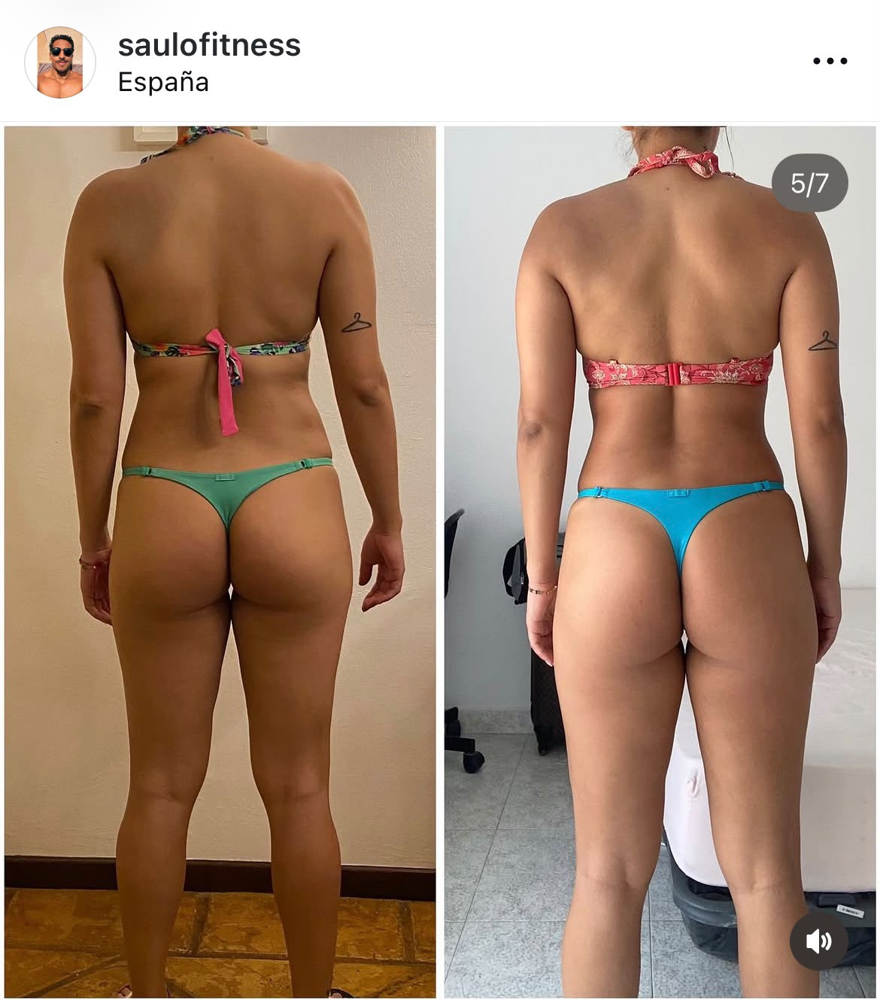
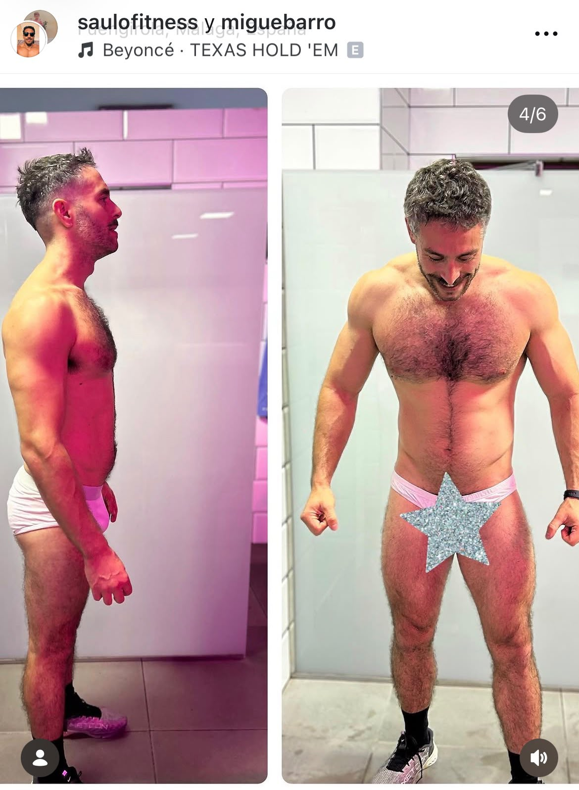

Caso real 01
Más masa muscular y presencia física
Un proceso centrado en fuerza, adherencia y mejora progresiva de la composición corporal.
Casos de éxito
Progreso visible, trabajo sostenido y una evolución que no depende de improvisar.
Un proceso centrado en fuerza, adherencia y mejora progresiva de la composición corporal.

Entrenamiento y hábitos ajustados para conseguir un cambio visible sin perder una estructura sostenible.

Reeducación del entrenamiento y del seguimiento para dejar de improvisar y avanzar con una dirección clara.

Un cambio construido con sesiones bien planteadas, constancia y seguimiento cercano.

Mejora corporal visible con foco en técnica, frecuencia y una planificación que se puede sostener.

Cuando el objetivo exige más precisión, el plan se ajusta con más control, más datos y más compromiso.